Crearea unei aplicații Android în Android Studio
Pentru a crea o aplicație Android se selectează Start a New Android Studio project.
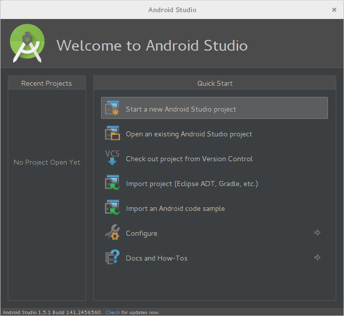
Configurarea proiectului presupune specificarea unor parametri:
- denumirea aplicației;
- domeniul companiei care dezvoltă aplicația respectivă.
Pe baza valorilor introduse, se generează denumirea pachetului care va identifica în mod unic aplicația. Acesta este format din domeniu (scris în formă inversă) la care se adaugă denumirea aplicației (din care sunt eliminate caracterele albe).
De asemenea, este necesar să se indice locația la care va fi plasat proiectul respectiv.
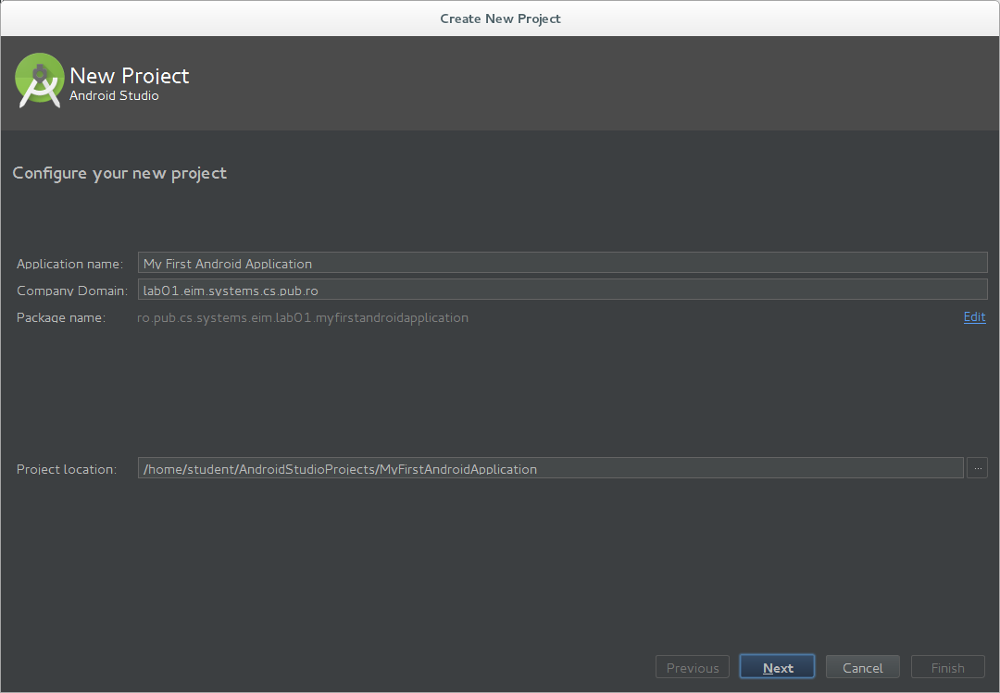
Se indică platforma căreia îi este destinată aplicația Android:
- dispozitiv mobil (telefon sau tabletă), caz în care trebuie să se precizeze valoarea minimă a nivelului de API pentru care se dezvoltă aplicația (cea mai scăzută valoare a platformei pe care poate rula aplicația);
- obiect vestimentar (ceas, brățară);
- televizor;
- dispozitiv pentru automobil;
- ochelari inteligenția;
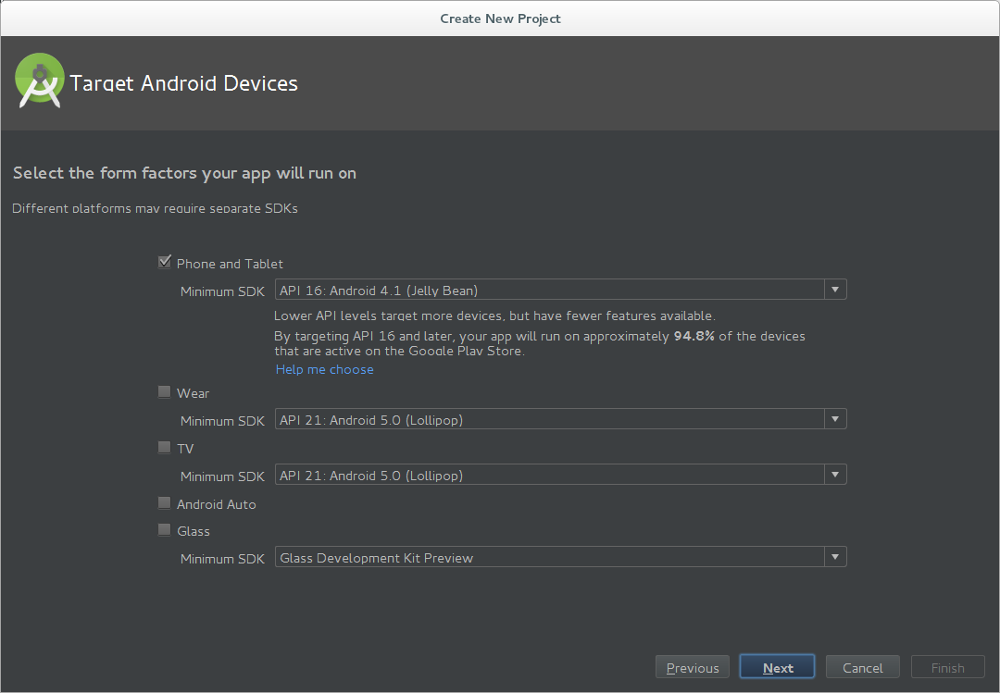
Este selectat tipul de actvitate care va fi vizualizată în momentul în care aplicația Android este pornită (//Blank Activity//, //Empty Activity//, //Fullscreen Activity//, //Google AdMob Activity//, //Google Maps Activity//, //Login Activity//, //Master/Detail Flow//, //Navigation Drawer Activity//, //Scrolling Activity//, //Settings Activity//, //Tabbed Activity//).
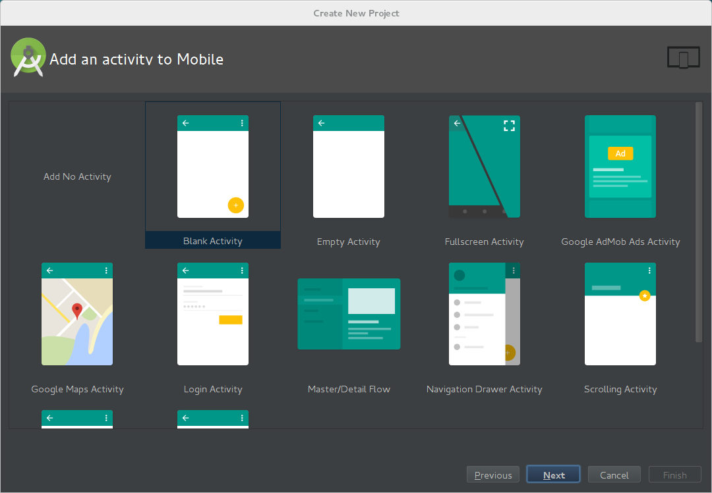
Se stabilește o denumire pentru activitatea principală, precum și denumirea fișierelor în care vor fi plasate structura interfeței grafice, respectiv a meniului asociat. Se poate preciza, de asemenea, folosirea de fragmente în cadrul activității.
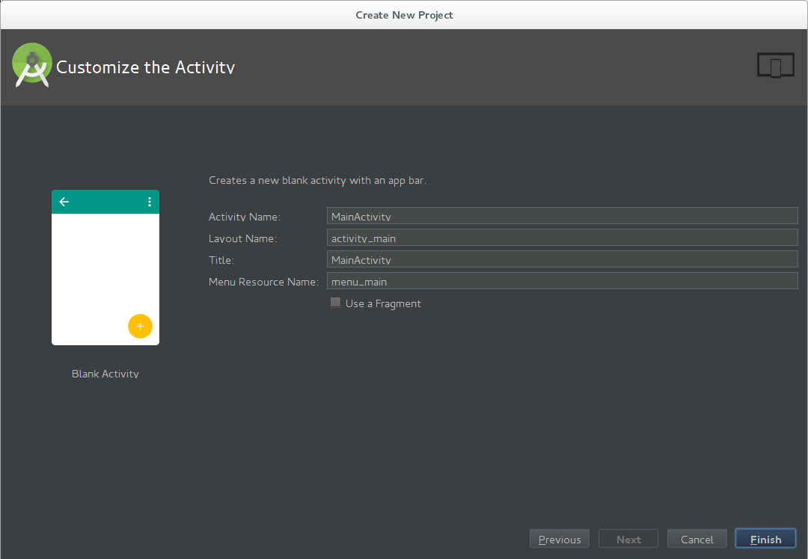
Se apasă butonul Finish.
Rularea unei aplicații Android se face prin intermediul unei pictograme asociate unei liste de selecție, în care sunt plasate toate aplicațiile disponibile în cadrul mediului integrat de dezvoltare. Se poate folosi și prescurtarea Shift + F10.
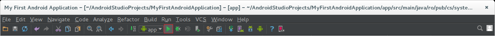
Utilizatorul are posibilitatea de a selecta dispozitivul pe care va fi rulată aplicația, dintre cele conectate la mașina pe care se rulează.

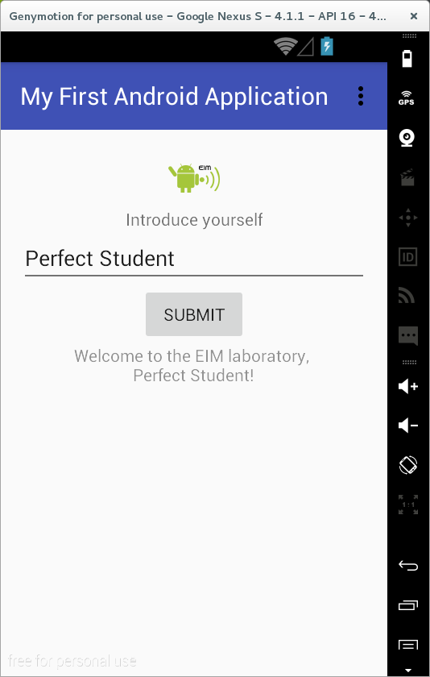
Testarea exemplelor de aplicații Android în Android Studio
Accesarea unui exemplu de aplicație Android se face prin intermediul opțiunii //Import an Android code sample//.
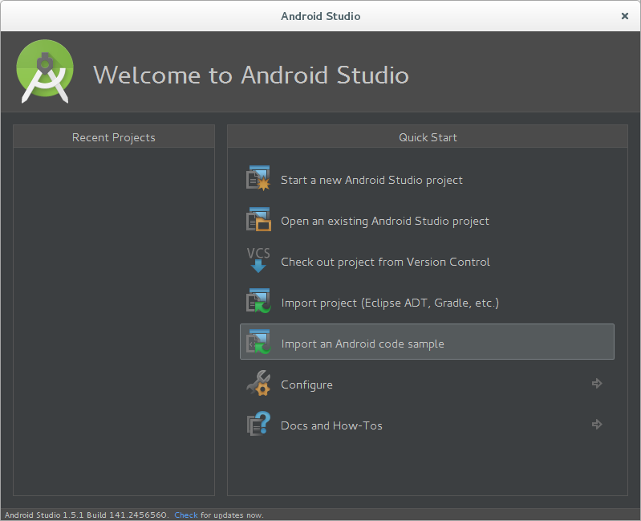
Pot fi consultate mai multe proiecte Android, pentru fiecare existând posibilitatea de a vizualiza codul sursă, disponibil în cadrul unui depozit GitHub. Gruparea aplicațiilor Android este realizată pe categorii tematice.
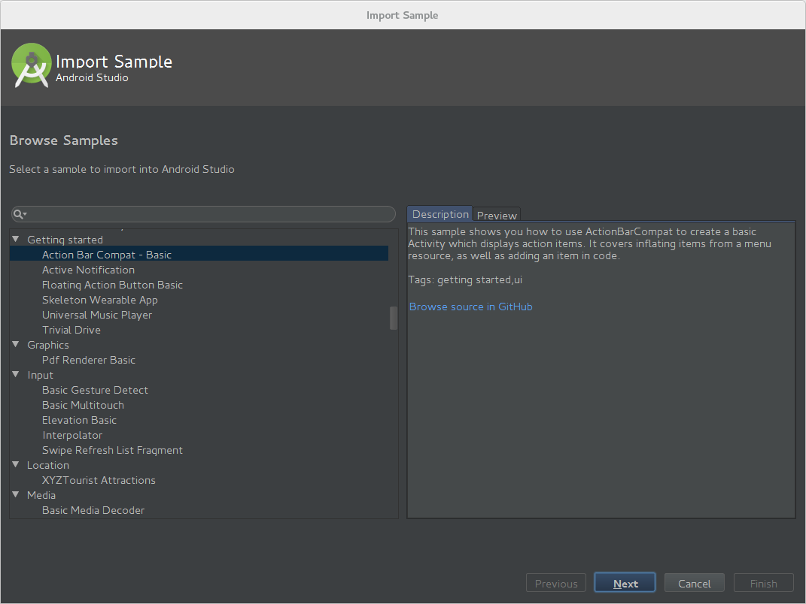
Un exemplu de aplicație Android, care se descarcă din contextul depozitului Github, poate fi redenumită, stabilindu-se și locația la care va fi stocată.
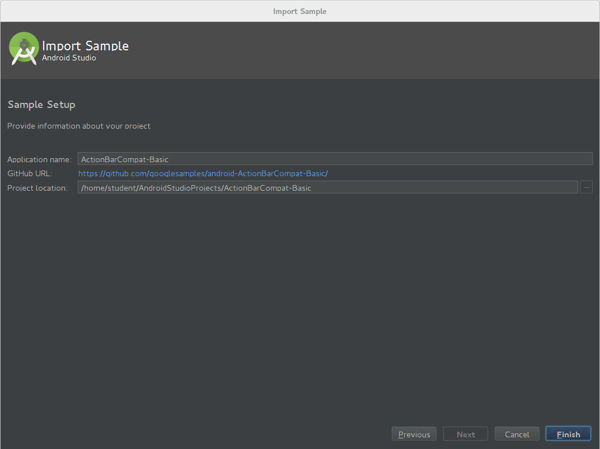
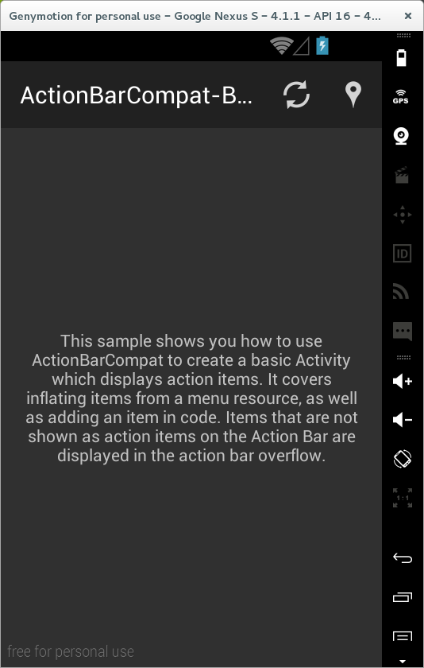